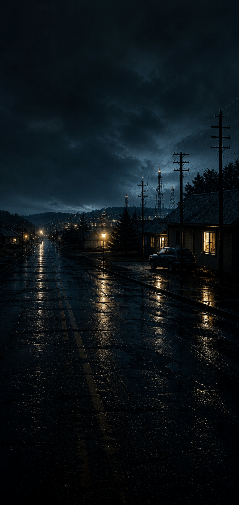

Season 1 · Episode 2
Signal 02
The Second Formation
For three days, Brody tried to find it again.
At first, he told himself he was being ridiculous. People saw strange things on screens all the time. Reflections. Compression errors. Lens flare. Some glitch in the camera software that turned rain and low light into something his mind wanted to make sense of.
But the word stayed with him.
Not because it had appeared. Because of what it asked.
Help.
He stopped taking pictures, and started looking through the phone instead. In the parking lot after work. On the back deck before bed. Through the kitchen window while the kettle boiled. He would raise the screen, sweep it slowly across the room, and wait for the glass and metal shape to appear again.
Nothing came through.
By the fourth night, Alder Reach was under a storm warning. Rain moved sideways across the street. The power lines behind the houses clicked and trembled in the wind. Far off, beyond the utility yard, the towers vanished and reappeared in white flashes of lightning.
Brody stood at the back door with his phone in his hand, feeling foolish and afraid and strangely ashamed of both.
Then the screen darkened.
Not all at once. Not like it had turned off.
The camera feed was still there — the deck boards, the railing, the pale blur of rain in the yard — but something had begun to form inside it. A distortion first. Then a shape. Then two.
They were not like the first object.
This formation looked less like a lamp and more like a machine trying to become a thought: two dark spheres suspended in a thin metal frame, one marked with faint rings that curved around its body, the other crossed by bands that ran from pole to pole. Between them, a small thread of light flickered and failed, flickered and failed, as if the signal were trying to connect the two halves and could not hold the line.
Brody forgot to breathe.
The first object had felt like a request.
This felt like a diagram.
He lifted the phone closer. The image trembled with the storm. For a moment, the two spheres seemed to drift apart, then pull back together, held by something too thin to see.
He did not understand what it meant.
But he understood one thing clearly.
Whatever had asked for help was still there.
And now it was trying to explain where.

The signal did not react
It must be expecting something else.
Coordinates received
The two spheres draw together. A thin line stabilizes between them. Then the formation vanishes.
This experience is only available on iPhone or iPad.